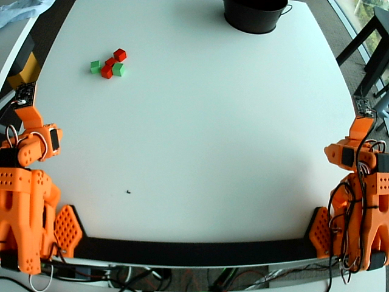
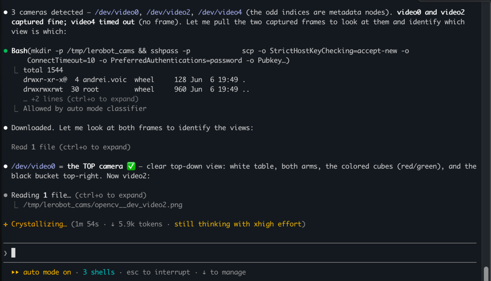
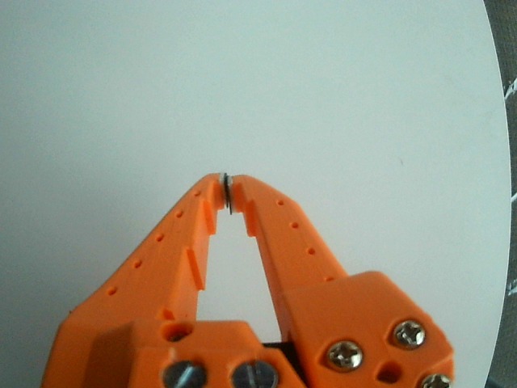
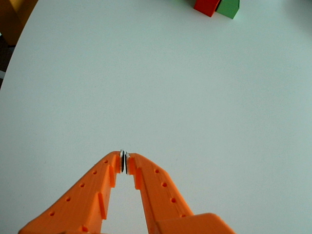
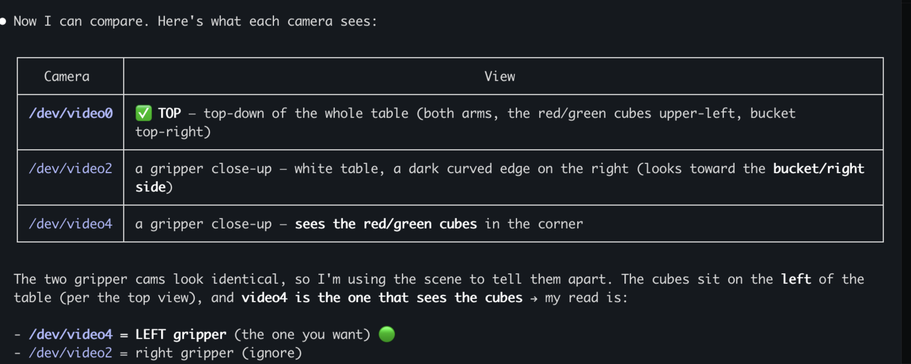

The agent looked at the cameras and figured out left from right
We told a coding agent to run our robot setup. We never told it how to tell two identical cameras apart. So it looked.
We're building a robot-arm setup at the office. Two arms on a white table, red and green cubes, a bucket. Three USB cameras: one looking down at the whole table, one on each gripper.

/dev/video0). Both arms, the cubes up in the left, the bucket top right. The easy one.Anyone who has touched a rig like this knows the worst part of the job: working out which camera is which. Linux hands you /dev/video0, /dev/video2, /dev/video4 and nothing else. The two gripper cameras are the same model, so on paper they're identical. The usual fix is dumb but reliable: unplug one, see which feed goes black, stick tape on it, repeat.
We asked the agent to run the data-collection process. That was the whole instruction. We said we needed the top camera and the left gripper, and we never even told it which device was which.
It listed the video devices, noticed the odd indices were just metadata nodes, and figured there were three real cameras. It tried to grab a frame from all three at once and one of them timed out. It didn't stop or ask for help. It worked out that opening three identical webcams together had maxed out the USB bus, and that the stubborn one would be fine on its own. So it grabbed the frames it could, captured the difficult camera separately, copied the images over SSH to its own machine, and then it did the thing that made us stop.
It opened the pictures and looked at them.

video4 timed out when all three opened at once, the frames got copied over SSH, and it started reading them one at a time./dev/video0 was easy: the whole table from above, both arms, cubes in the upper left, bucket top right. Top camera, done.
The two gripper cameras were the problem. Nearly identical close-ups, orange gripper, white table. Nothing in the metadata tells you left from right.


Same camera model, same gripper, same white table. The only difference that matters: the one on the right (/dev/video4) can see the cubes. So that's the left gripper.
So it read the scene instead. The top view put the cubes on the left side of the table. One gripper camera had those same red and green cubes sitting in the corner of its frame. The other was looking at empty table toward the bucket. So the camera that can see the cubes is the left gripper, the one we wanted. The other is the right one. Ignore it.

video4 is the left gripper, because it's the only one of the two that can see the cubes.Then it did one more sensible thing. It didn't just assume it had it right. It told us its answer and asked one question: was the left gripper the one looking at the cubes? Yes. It had it.
Nobody taught it that. We didn't say "take photos," or "use the cubes as a landmark," or "the cubes are on the left." It came up with the method a careful person would use anyway: get some evidence, look at it, reason from what's actually in front of you, then check before you commit. It treated the cameras as eyes.
The robot arms will do their demo, and that will look impressive. But the part worth remembering is an AI squinting at a photo of a table, working out left from right by where the cubes were. 😀
The three table photos are the actual frames the agent captured and looked at on 6 June 2026, pulled straight off the robot box. The two dark screenshots are from the session itself. The grippers are SO-101 arms. The timeout it worked around was a real USB-2.0 bandwidth limit from three uncompressed camera streams sharing one bus.
Keep Reading
Continue with the blog index, read how we turned a 3D printer into a caricature artist, or how I built Crayo in 3 days.